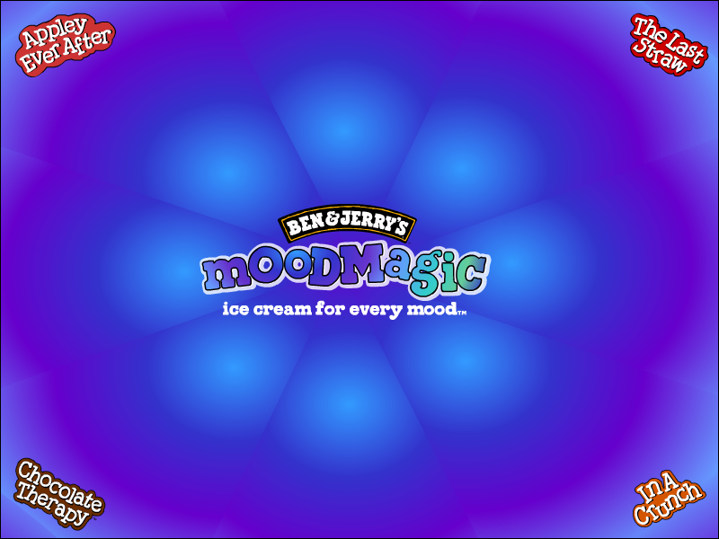
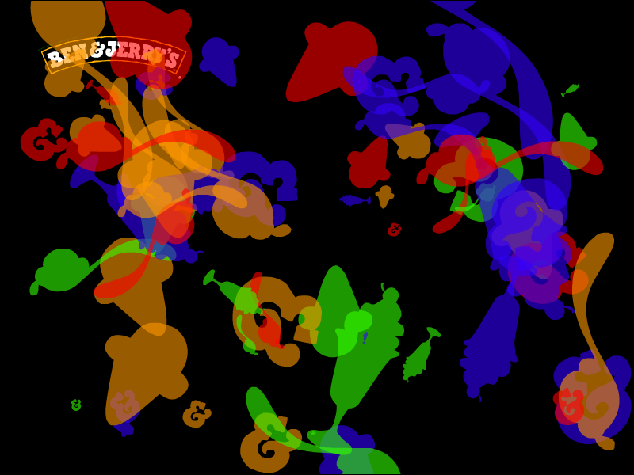

Ben & Jerry's Screensavers

Flavor Graveyard

DOWNLOAD
 .exe file zipped (800 x 600) (0.99 MB)
.exe file zipped (800 x 600) (0.99 MB)
.exe file zipped (1024 x 768) (0.99 MB)
.exe file zipped (1280 x 1024) (1.03 MB)
Mood Magic

DOWNLOAD
.exe file zipped (Windows) (800 x 600) (994 KB)
.exe file zipped (Windows) (1024 x 768) (1.02 MB)
.sit file (Mac OS 9) (800 x 600) (971 KB)
.sit file (Mac OS 9) (1024 x 768) (932 KB)
.sit file (Mac OS X) (800 x 600) (703 KB)
.sit file (Mac OS X) (1024 x 768) (763 KB)
Raise a Flavor

DOWNLOAD
.exe file zipped (Windows) (800 x 600) (0.97 MB)
.exe file zipped (Windows) (1024 x 768) (0.97 MB)
.exe file zipped (Windows) (1280 x 1024) (0.97 MB)
.sit file (Mac OS 9) (800 x 600) (877 KB)
.sit file (Mac OS 9) (1024 x 768) (877 KB)
.sit file (Mac OS 9) (1280 x 1024) (877 KB)
.sit file (Mac OS X) (800 x 600) (708 KB)
.sit file (Mac OS X) (1024 x 768) (708 KB)
.sit file (Mac OS X) (1280 x 1024) (708 KB)
Random Art

DOWNLOAD
.exe file zipped (Windows) (800 x 600) (979 KB)
.exe file zipped (Windows) (1024 x 768) (979 KB)
.exe file zipped (Windows) (1280 x 1024) (979 KB)
.sit file (Mac OS 9) (800 x 600) (850 KB)
.sit file (Mac OS 9) (1024 x 768) (850 KB)
.sit file (Mac OS 9) (1280 x 1024) (850 KB)
.sit file (Mac OS X) (800 x 600) (682 KB)
.sit file (Mac OS X) (1024 x 768) (682 KB)
.sit file (Mac OS X) (1280 x 1024) (682 KB)
Turkey Time

DOWNLOAD
.exe file zipped (Windows) (800 x 600) (0.99 MB)
.exe file zipped (Windows) (1024 x 768) (0.99 MB)
.exe file zipped (Windows) (1280 x 1024) (0.99 MB)
.sit file (Mac OS 9) (800 x 600) (900 KB)
.sit file (Mac OS 9) (1024 x 768) (900 KB)
.sit file (Mac OS 9) (1280 x 1024) (900 KB)
.sit file (Mac OS X) (800 x 600) (731 KB)
.sit file (Mac OS X) (1024 x 768) (731 KB)
.sit file (Mac OS X) (1280 x 1024) (731 KB)
Wavy Gravy

DOWNLOAD
.exe file zipped (Windows) (800 x 600) (1.15 MB)
.exe file zipped (Windows) (1024 x 768) (1.15 MB)
.exe file zipped (Windows) (1280 x 1024) (1.13 MB)
.sitx file (Mac OS 9) (800 x 600) (1.02 MB)
.sitx file (Mac OS 9) (1024 x 768) (1.02 MB)
.sitx file (Mac OS 9) (1280 x 1024) (1.02 MB)
Winter Scene

DOWNLOAD
.exe file zipped (800 x 600) (977 KB)
.exe file zipped (1024 x 768) (977 KB)
.exe file zipped (1280 x 1024) (977 KB)